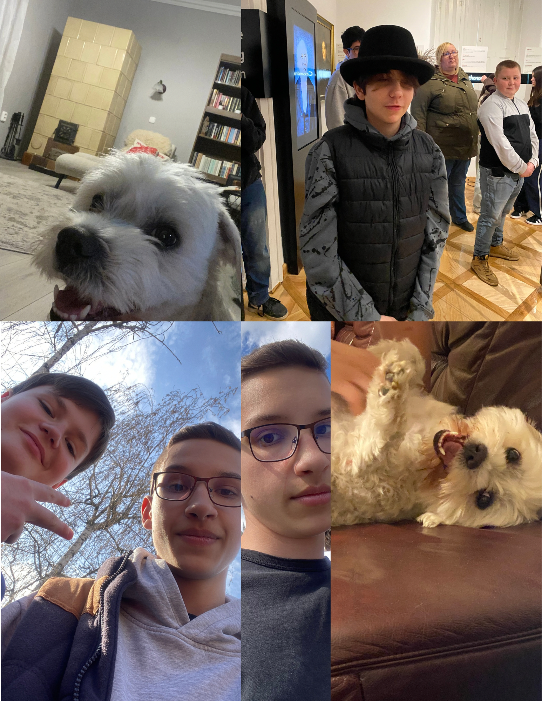

Azn én nevem Kánya Dominik avagy Kanye West, 15 éves vagyok. Plussz még egy mondat. Majd később lett még egy mondat.
Azért vállasztottam a Kandót hogy Szoftveríró legyek majd később. A programozás mindig is nagy állmom volt már gyerekkorom óta.
